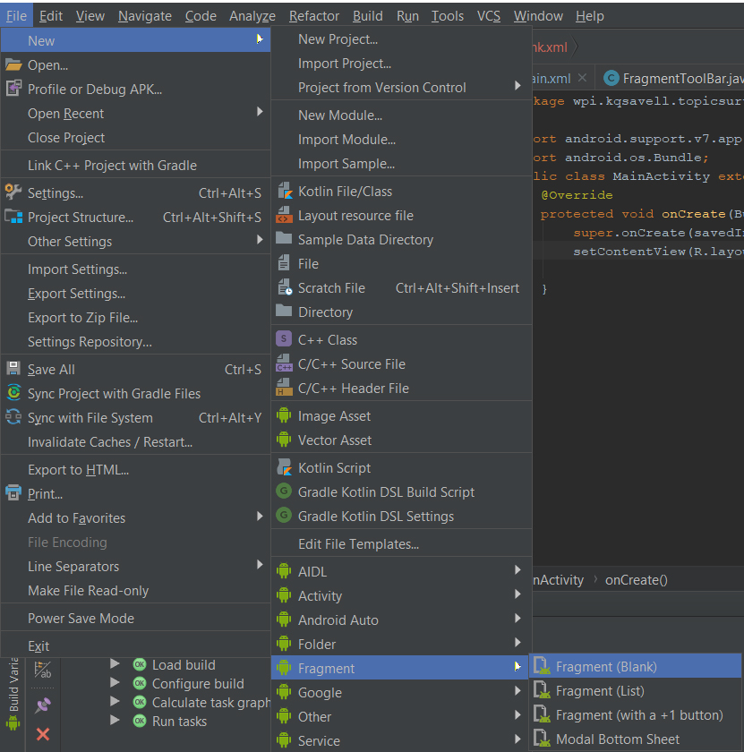
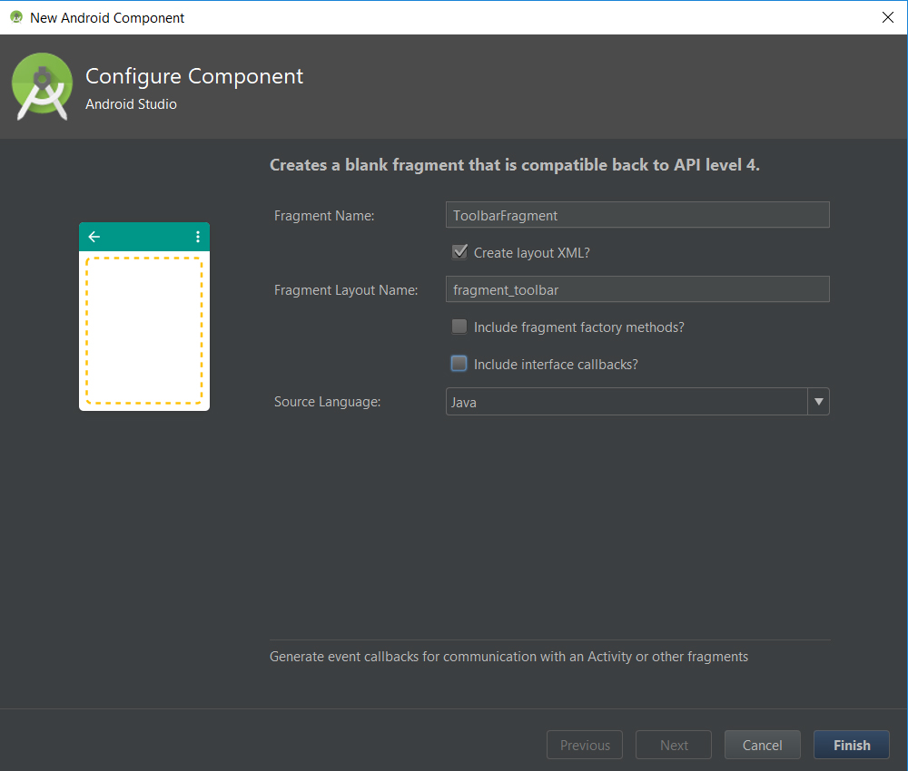
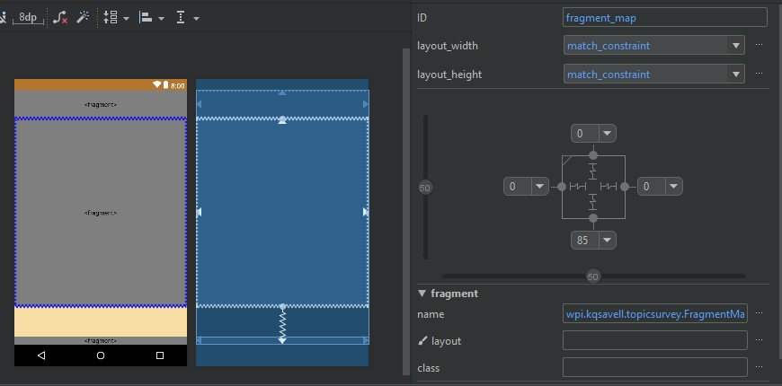
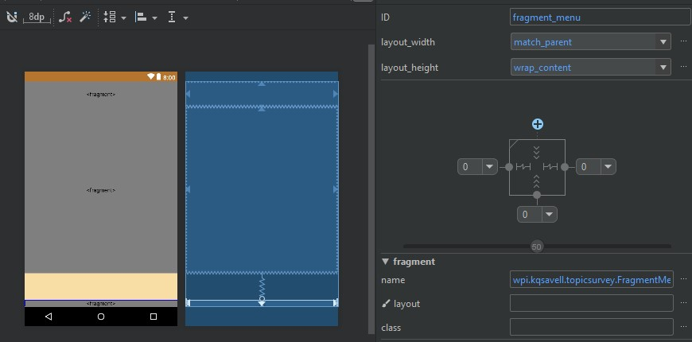
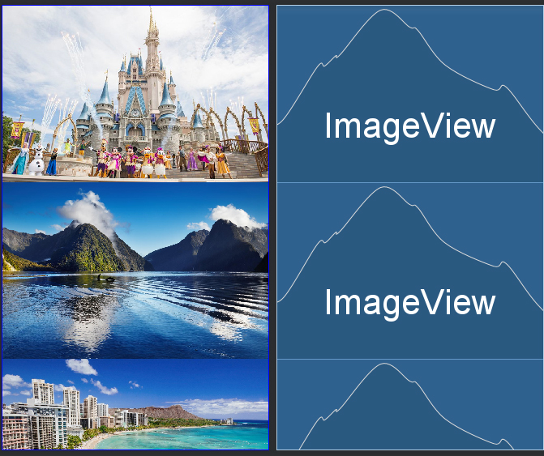
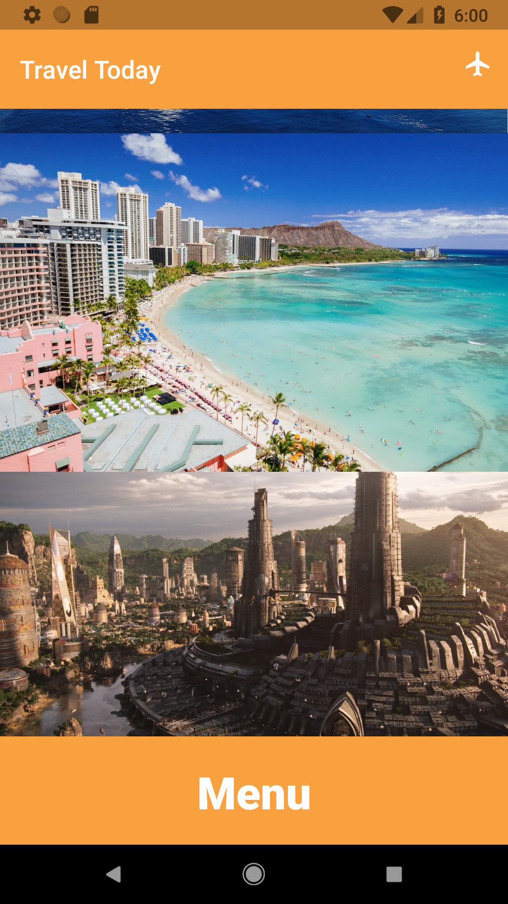
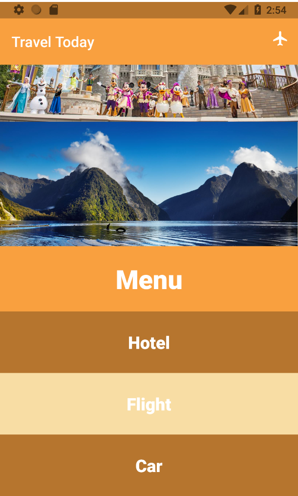

Material Design Tutorial
This tutorial will show you how to spice up your applications using material design principles and styles. To do this, we will be editing the source code of a travel mobile application called TravelToday.
You will build a page of the TravelToday app that contains:
In this tutorial you will do the following:
Prerequisites:
Please the download the following starter code before you proceed to the next sections:
https://github.com/kqsavell/MaterialDesign_Codelab/archive/starting_code.zip
The starter code contains a bland looking application that has a basic toolbar, a picture of Honolulu, and some blank white space underneath.
Material Design is a visual language that synthesizes the classic principles of good design with the innovation of technology and science.
This tutorial will focus on the use of styles to customize widget:
First thing we want to do is modularize the separate aspects of the application into fragments. This streamlines the code so that all functionality is not jam packed into a single file, and makes updating separate features easier in the future.
File > New > Fragment > Fragment (Blank)
ToolbarFragment. Make sure that the option ‘Create layout XML?' is checked. Uncheck the two includes (‘include fragment factory methods? & include interface callback?').
MapFragment), and fragment for holding a pop up menu (call it MenuFragment).MainActivity retains the same functionality as before.activity_main.xml, except the root layout.<fragment>.ToolbarFragment and constrain its top to the top of the screen, with 0 to the left and right so it stays centered.<fragment>, and select MapFragment. Constrain the top of this fragment to the bottom of the ToolbarFragment. Constrain its bottom to 85dp off the bottom of the screen. That 85dp will be filled in by the MenuFragment when it's inflated.
<fragment>, as MenuFragment, and constrain its bottom to the bottom of the screen, with 0 to the left and right.
The first widget we will add to the application is a custom ActionBar. The ActionBar is the bar at the top of the screen by default.
It is important to make the ActionBar as easy to use and readable as possible. In Material Design it is common to use symbolic icons for menu items in the ActionBar, since they reduce clutter and are readable across languages. Thus, we will be adding a mockup menu icon to our ActionBar.
In order customize the ActionBar, the default one needs to be removed and a new one must be created. To get rid of the old ActionBar, an application theme without an ActionBar can be used. The application theme can be edited in the styles.xml file, which is found in the values directory of the resources. In the style tag, the theme can be changed to another default one:
<style name="AppTheme" parent="Theme.AppCompat.Light.NoActionBar">
The "NoActionBar" themes do not have an ActionBar to start with, so any of these themes can be used.
Next, we need to add the new ActionBar to the layout. To do this, we will be filling the toolbar fragment we made with a xml layout. In the resources folder created a new directory called "menu". In the menu directory create a new xml resource file (we named ours "actions"). Replace the default code of this new xml file with the given:
<?xml version="1.0" encoding="utf-8"?>
<menu xmlns:android="http://schemas.android.com/apk/res/android"
xmlns:app="http://schemas.android.com/apk/res-auto">
<item
android:id="@+id/action_airplane"
android:icon="@drawable/outline_flight_24"
android:title="@string/app_icon"
app:showAsAction="always" />
</menu>
The icon is an airplane icon that we have provided. Note that for ActionBar items the title attribute must always exist. If you wanted to add additional icons to the ActionBar, more item tags can be added to this xml resource.
Navigate to fragment_toolbar.xml and add the following code in order to add a toolbar to our toolbar fragment:
<?xml version="1.0" encoding="utf-8"?>
<android.support.constraint.ConstraintLayout xmlns:android="http://schemas.android.com/apk/res/android"
xmlns:app="http://schemas.android.com/apk/res-auto"
android:layout_width="match_parent"
android:layout_height="match_parent">
<android.support.v7.widget.Toolbar
android:id="@+id/toolbar_fragmentToolBar"
android:layout_width="match_parent"
android:layout_height="match_parent"
android:background="?attr/colorPrimary"
android:elevation="4dp"
android:theme="@style/ThemeOverlay.AppCompat.ActionBar"
app:popupTheme="@style/ThemeOverlay.AppCompat.Light" />
</android.support.constraint.ConstraintLayout>
Navigate to ToolbarFragment.java and refactor the base code so that it looks like this:
private Toolbar mToolbar;
@Override
public View onCreateView(@NonNull LayoutInflater inflater, ViewGroup container, Bundle savedInstanceState)
{
View view = inflater.inflate(R.layout.fragment_toolbar, container, false);
mToolbar = view.findViewById(R.id.toolbar_fragmentToolBar);
((AppCompatActivity) getActivity()).setSupportActionBar(mToolbar);
setHasOptionsMenu(true);
return view;
}
To add this icon to the Toolbar we created, we will need to inflate it when the Toolbar is created. We can do this by adding an overidden onCreateOptionsMenu callback underneath onCreateView:
@Override
public void onCreateOptionsMenu(Menu menu, MenuInflater inflater)
{
inflater.inflate(R.menu.actions, menu);
super.onCreateOptionsMenu(menu,inflater);
}
Now when you run the application, the ActionBar should look as so (the colors may be different):
Now that we have the app bar, let's add some content to the middle of the screen. We will be adding a ScrollView to the map fragment that we made, which allows the user to scroll through a layout by dragging on the screen. This adds a degree of interactivity that is important in Material Design. We used to following code in the fragment_map.xml file for the ScrollView:
<?xml version="1.0" encoding="utf-8"?>
<android.support.constraint.ConstraintLayout
xmlns:android="http://schemas.android.com/apk/res/android"
xmlns:app="http://schemas.android.com/apk/res-auto"
android:layout_width="match_parent"
android:layout_height="match_parent">
<ScrollView
android:layout_width="match_parent"
android:layout_height="match_parent"
android:layout_margin="0dp"
android:padding="0dp">
<LinearLayout
android:layout_width="match_parent"
android:layout_height="wrap_content"
android:layout_margin="0dp"
android:gravity="top|center|fill"
android:orientation="vertical"
android:padding="0dp">
<ImageView
android:id="@+id/imageView_disney"
android:layout_width="match_parent"
android:layout_height="wrap_content"
android:adjustViewBounds="true"
app:srcCompat="@mipmap/disney" />
<ImageView
android:id="@+id/imageView_newzealand"
android:layout_width="wrap_content"
android:layout_height="wrap_content"
android:adjustViewBounds="true"
android:scaleType="fitStart"
app:srcCompat="@mipmap/newzealand" />
<ImageView
android:id="@+id/imageView_honolulu"
android:layout_width="wrap_content"
android:layout_height="wrap_content"
android:adjustViewBounds="true"
android:scaleType="fitXY"
android:visibility="visible"
app:srcCompat="@mipmap/honolulu" />
<ImageView
android:id="@+id/imageView_wakanda"
android:layout_width="match_parent"
android:layout_height="wrap_content"
android:adjustViewBounds="true"
android:scaleType="fitXY"
app:srcCompat="@mipmap/wakanda" />
</LinearLayout>
</ScrollView>
</android.support.constraint.ConstraintLayout>
There are a couple things to note here. First, we have a LinearLayout inside of the ScrollView. This way the screen can be scrolled up and down. Second, each image item in the LinearLayout has the android:adjustViewBounds attribute set to true. This formats the images so that there is no blank space between each image.
Feel free to add any images of your choosing to each item or you can use the images provided. Your map fragment should look something like this in the design view:

Material design dictates that motion should provide meaning. TravelToday requires a menu, so let's implement a menu at the bottom of the screen which provides feedback to the user.
First we have to create another .xml file to implement the menu. Right click on /res/layout and make a new file called bottom_sheet.xml. We have to make this file to contain the fragment_menu.xml in a coordinator layout.
To do this, in your newly created file, replace the code with:
<?xml version="1.0" encoding="utf-8"?>
<android.support.design.widget.CoordinatorLayout xmlns:android="http://schemas.android.com/apk/res/android"
xmlns:app="http://schemas.android.com/apk/res-auto"
xmlns:tools="http://schemas.android.com/tools"
android:layout_width="match_parent"
android:layout_height="match_parent"
tools:context=".MainActivity">
<!-- include fragment_menu.xml -->
<include layout="@layout/fragment_menu" />
</android.support.design.widget.CoordinatorLayout>
Now we have to make the actual menu in fragment_menu.xml. In the menu, we'll include 4 total buttons. Copy in the code below into fragment_menu.xml to make these buttons.
<?xml version="1.0" encoding="utf-8"?>
<LinearLayout xmlns:android="http://schemas.android.com/apk/res/android"
xmlns:app="http://schemas.android.com/apk/res-auto"
android:id="@+id/bottom_sheet"
android:layout_width="match_parent"
android:layout_height="345dp"
android:background="@android:color/darker_gray"
android:orientation="vertical"
app:behavior_hideable="true"
app:behavior_peekHeight="90dp"
app:layout_behavior="android.support.design.widget.BottomSheetBehavior">
<Button
android:id="@+id/button"
android:layout_width="match_parent"
android:layout_height="90dp"
android:gravity="center"
android:text="Menu" />
<Button
android:id="@+id/hotel"
android:layout_width="match_parent"
android:layout_height="85dp"
android:gravity="center"
android:text="Hotel" />
<Button
android:id="@+id/flight"
android:layout_width="match_parent"
android:layout_height="85dp"
android:gravity="center"
android:text="Flight" />
<Button
android:id="@+id/car"
android:layout_width="match_parent"
android:layout_height="85dp"
android:gravity="center"
android:text="Car" />
</LinearLayout>
You might notice that our strings are hard-coded in. If you would like to replace these with resources from the strings folder, feel free to do so.
At this point, you have made the base design components of the menu, but we need to inflate it and make it functional.
We're going to head over to MenuFragment.java and add in the following code to give life to our menu. By default, the menu can only be expanded and collapsed by dragging. To create a better user experience, we can override the top button's onClick functionality. We have also included other helpful overrides if you choose to use a bottom sheet in your next project:
public class MenuFragment extends Fragment
{
@Override
public View onCreateView(@NonNull LayoutInflater inflater, ViewGroup container, Bundle savedInstanceState)
{
View view = inflater.inflate(R.layout.bottom_sheet, container, false);
// get bottom sheet view
LinearLayout mBottomSheet = (LinearLayout) view.findViewById(R.id.bottom_sheet);
Button mButton = (Button) view.findViewById(R.id.button);
// init bottom sheet behavior from mBottomSheet object
final BottomSheetBehavior bottomSheetBehavior = BottomSheetBehavior.from(mBottomSheet);
// change state of bottom sheet
bottomSheetBehavior.setState(BottomSheetBehavior.STATE_COLLAPSED);
// feel free to play around with these other states
//bottomSheetBehavior.setState(BottomSheetBehavior.STATE_EXPANDED);
//bottomSheetBehavior.setState(BottomSheetBehavior.STATE_HIDDEN);
mButton.setOnClickListener(new View.OnClickListener() {
@Override
public void onClick(View v) {
if (bottomSheetBehavior.getState() == BottomSheetBehavior.STATE_EXPANDED) {
bottomSheetBehavior.setState(BottomSheetBehavior.STATE_COLLAPSED);
} else {
bottomSheetBehavior.setState(BottomSheetBehavior.STATE_EXPANDED);
}
}
});
// here are some overrides for reference if you choose to use BottomSheetBehavior in your next project
bottomSheetBehavior.setBottomSheetCallback(new BottomSheetBehavior.BottomSheetCallback() {
@Override
public void onStateChanged(@NonNull View bottomSheet, int newState) {
}
@Override
public void onSlide(@NonNull View bottomSheet, float slideOffset) {
}
});
return view;
}
}


Next, let's choose a color scheme to properly represent the app, as well as draw user's attention to important signifiers of action. In this system, a primary and a secondary color are typically selected to represent your brand. Dark and light variants of each color can then be applied to your UI in different ways.
A primary color is the color displayed most frequently across your app's screens and components. A secondary color provides more ways to accent and distinguish your product. Having a secondary color is optional, and should be applied sparingly to accent select parts of your UI.
To create contrast between UI elements, such as distinguishing a top app bar from a system bar, you can use light or dark variants of your primary color on each elements.
colorPrimary to your primary color, the hex value of colorPrimaryDark to the darker shade of your primary color,colorAccent to your secondary color.colorPrimaryLight, which is a lighter shade of your primary color.textColorPrimary and make it a color that stands out from your primary color. Usually this is either white (#FFFFFF) or black (#000000). You can do this by adding this line in colors.xml:<color name="textColorPrimary">#FFFFFF</color>
*In styles.xml, which is in the same location as colors.xml add the color in the AppTheme style.
<style name="AppTheme" parent="Theme.AppCompat.Light.NoActionBar">
<!-- Customize your theme here. -->
<item name="colorPrimary">@color/colorPrimary</item>
<item name="colorPrimaryDark">@color/colorPrimaryDark</item>
<item name="colorAccent">@color/colorAccent</item>
<item name="android:textColorPrimary">@color/textColorPrimary</item>
</style>
<item name="android:windowLightStatusBar" tools:targetApi="m">true</item>
<style name="Widget.Material.Toolbar" parent="Widget.AppCompat.Toolbar">
<item name="android:background">?attr/colorPrimary</item>
<item name="android:theme">@style/AppTheme</item>
<item name="popupTheme">@style/ThemeOverlay.AppCompat.Light</item>
</style>
android:background="@color/. . ." under <android.support.constraint.ConstraintLayout in activity_main.xml. Try out different colors and see what works. Your activity_main.xml file should look like this:<?xml version="1.0" encoding="utf-8"?>
<android.support.constraint.ConstraintLayout xmlns:android="http://schemas.android.com/apk/res/android"
xmlns:app="http://schemas.android.com/apk/res-auto"
xmlns:tools="http://schemas.android.com/tools"
android:id="@+id/constraintLayout"
android:layout_width="match_parent"
android:layout_height="match_parent"
android:background="@color/colorAccent"
tools:context=".MainActivity">
...
ButtonMenu for the button that opens the menu, and styles ButtonMenuItem1 and ButtonMenuItem2 for the buttons in the menu.ButtonMenu style. We will set the color of the button to the primary color, change the text size to 36dp, make the text bold, change the text color to the primary text color, and set textAllCaps to false. Add the following code to styles.xml to create this style:<style name = "ButtonMenu" parent = "Widget.AppCompat.Button" >
<item name="android:background">@color/colorPrimary</item>
<item name="android:theme">@style/AppTheme</item>
<item name="popupTheme">@style/ThemeOverlay.AppCompat.Light</item>
<item name="android:textSize">36dp</item>
<item name="android:textStyle">bold</item>
<item name="android:textAllCaps">false</item>
</style>
android:background and android:textSize items. Make two more styles, called ButtonMenuItem1 and ButtonMenuItem2 in the same way you made the ButtonMenu style, just with those two items changed to the color and size you would like. The color of ButtonMenuItem1 should be different than the color of ButtonMenuItem2.res/layout/fragment_menu.xml. The first Button element in this file is the button that opens the menu. Add style="@style/ButtonMenu" under the Button element, just like this:<Button
style="@style/ButtonMenu"
android:id="@+id/button"
...
/>
Buttons, add the ButtonMenuItem1 style, ButtonMenuItem2 style, and ButtonMenuItem1 style in that order.